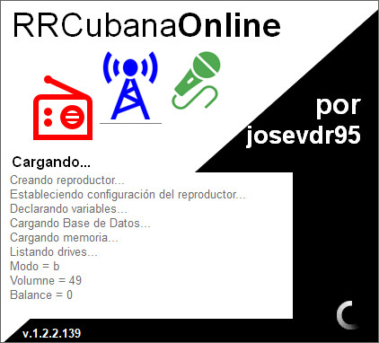
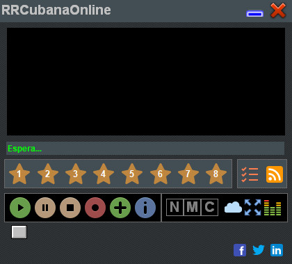
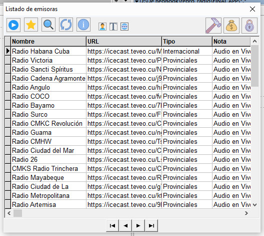

Descripción

RRCubanaOnline es un reproductor de la Radio Cubana Online que te permite reproducir y grabar emisoras de radio cubanas a través de Internet. Con funciones de RSS y otras utilidades, te mantendrás actualizado con los últimos programas y noticias de la radio cubana.
Descargar
Aquí puedes descargar el Reproductor de la Radio Cubana Online.
RRCubanaOnline v1.2.1225
Plataforma: Windows XP/7/8/10/11
Tamaño del archivo (ZIP): 50 MB
Hash MD5 del archivo (ZIP): abcdef1234567890
Hash MD5 del archivo (EXE): abcdef1234567890
100% Libre de virus: Virus Total
Cambios de la versión v1.2.1225
Descargar versión anterior : v1.01
Descargar ultima versiónDonaciones
Ayuda a mantener el desarrollo del programa realizando una donación.
Realizar DonaciónImagenes


Contacto
Para consultas o comentarios, contáctanos mediante los siguientes correos:
- josevdr95@gmail.com
- josevintilio.dominguez@cubava.cu